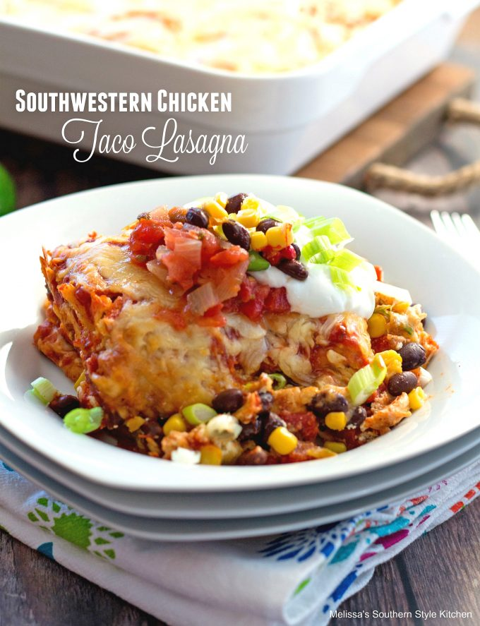

Home
Bloody Lasagna! A Pillager's recipe

What is it?
This wonderful Lasagna is the warrior's choice
after a long day of burning crops and stealing resources!
Veggies, meats, carbs and the satisfaction of a hot meal resting comfortably in
your belly right next to the mead!
Ingredients and Steps
- 1 lb of ground beef
- tomato sauce
- 1 can of corns
- 1 can of black beans
- 2 cups of spinach
- 1 brick of shrp white cheddar (or your cheese of preference
- pasta
- Boil the pasta to your desired firmness! Make sure to do atleast two layers!!
- Grate the cheese. Portion it out for your layers as desired. Make sure to leave plenty for the top layer!!
- Cook the ground beef on five (or on whichever setting is best for your burner), add the spinach, corn, and beans when the beef is halfway done
- Place the first layer of pasta onto a slicked casserole pan
- add your mix of ground onto the first layer, portioned as needed for the pan
- Put the jarred tomato sauce ontop of the first layer, protioned as needed
- Place your shredded cheese ontop of the sauce, protioned as needed
- Repeat steps 4-7 for the second layer, and perhaps the third if you're
making a Lasagna fit for a warband!
- Once done with your layers, add the rest of your cheese to the top!
- Bake for thirty minutes at 325 (I did not do research, idk if that's right or not)
- cover the